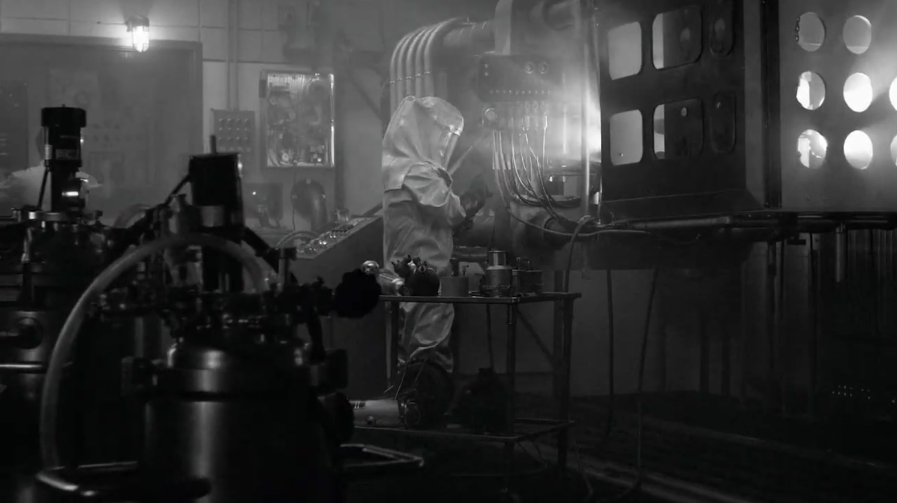
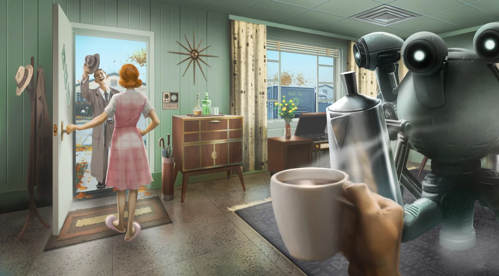
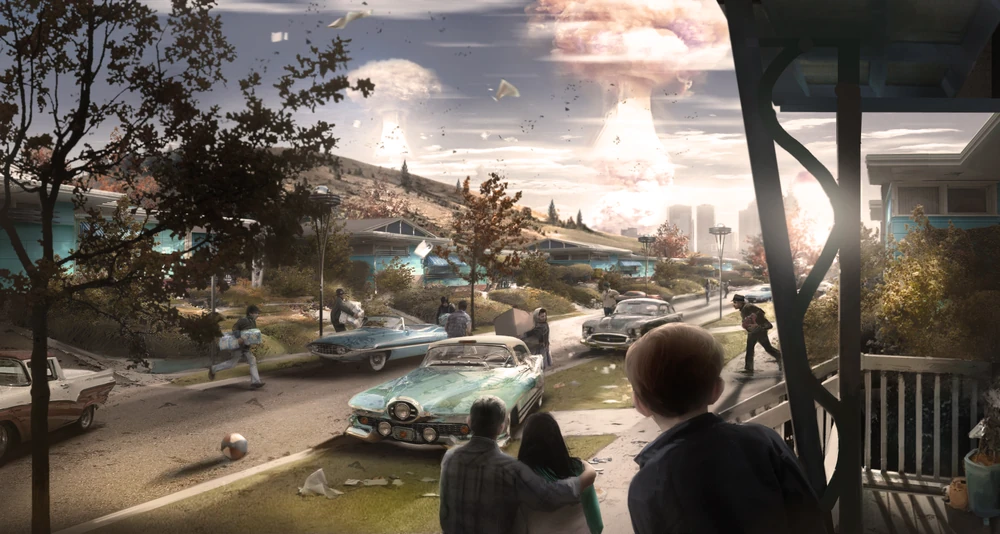

The Power of the Atom

In the aftermath of World War II, as Hiroshima and Nagasaki crumbled, the rest of the world waited for total nuclear annihilation. Surprisingly what followed was peace, nuclear power was refined and harnessed to improve lives instead of continuing to erase them. Transistors were largely ignored in favor of the near limitless power available through nuclear fusion. While this prevented the miniaturization of computers, it allowed humanity to soar technologically in many other areas. Cars capable of driving several thousand miles on one nuclear energy cell, advanced robotics managing the home, cybernetic augments, and of course more advanced weaponry...
Peace?

Many years of peace and technological advancement led to booming economies around the world. Mass consumerism took hold across the globe, and eventually resources became strained. Although oil reliance was less prevalent thanks to nuclear fusion, it still remained an invaluable resource. The first crack in global peace formed as the United States invaded Mexico to seize their oil fields in 2051. That crack spiderwebed as the European Commonwealth invaded the Middle East leading to the first nuclear detonation since the end of World War II. With oil fields running dry worldwide, the United States prepared to defend their last known supply in Alaska. With sociopolitical tension rising, the United States annexed Canada after they pulled logistical support to defend Alaska from China's impending invasion.
October 23, 2077

The Great War started and ended, lasting only 2 hours. Thousands of intercontinental ballistic missiles with nuclear payloads delivered global devastation. Despite Earth being transformed into a radioactive wasteland, this is merely the prelude.